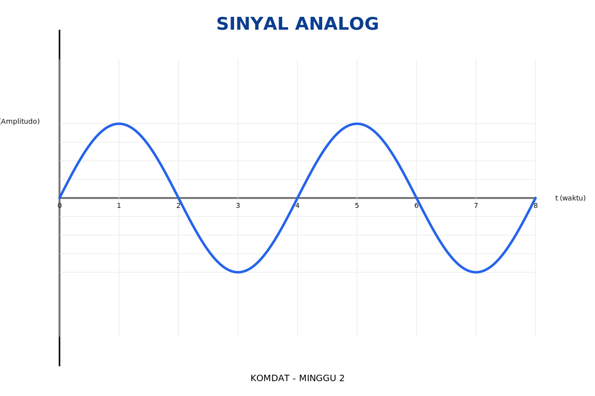
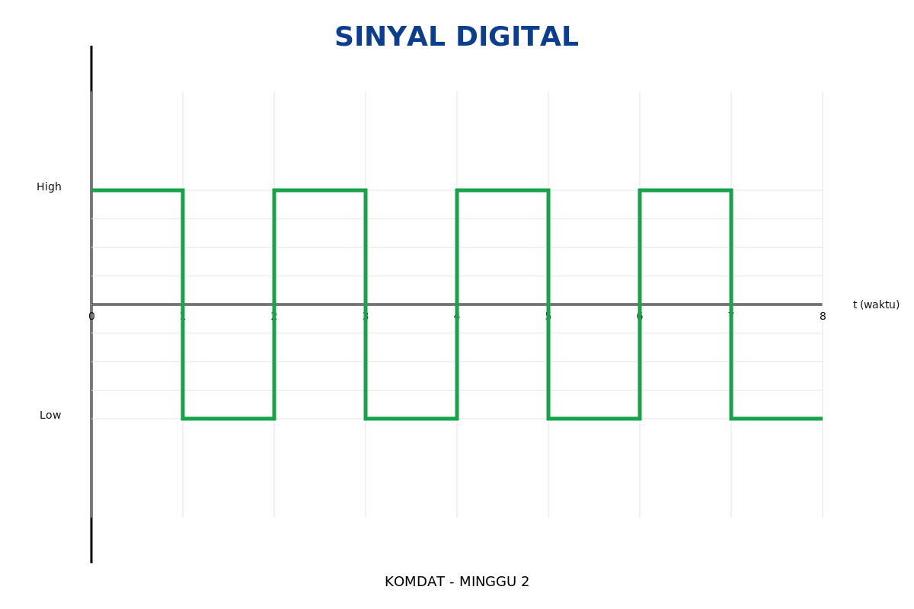

Menjelaskan karakteristik sinyal (amplitudo, frekuensi, dan fase).
Menjelaskan hubungan antara data, sinyal, dan transmisi dalam komunikasi data.
Mengidentifikasi jenis-jenis sinyal yang digunakan dalam sistem komunikasi.
📘 Pokok Bahasan
Pengantar Data dan Sinyal
Jenis Data: Analog dan Digital
Jenis Sinyal: Analog dan Digital
Karakteristik Sinyal (Amplitudo, Frekuensi, Fase)
Hubungan antara Data, Sinyal, dan Transmisi
Contoh Kasus dan Aplikasi Nyata
📗 Materi Inti
1️⃣ Pengantar Data dan Sinyal
Data adalah representasi fakta, instruksi, atau konsep yang diolah oleh komputer atau dikirim melalui media komunikasi. Data dapat berupa angka, teks, suara, atau gambar.
Sinyal adalah representasi fisik dari data dalam bentuk gelombang listrik, optik, atau elektromagnetik yang digunakan untuk mengirim data dari satu titik ke titik lain.
2️⃣ Jenis Data
Analog: Nilai kontinu, contoh: suara manusia, suhu.
Digital: Nilai diskrit (biner), contoh: teks komputer, gambar digital.
3️⃣ Jenis Sinyal
Sinyal Analog: Bentuk gelombang sinus kontinu, contoh: siaran radio.
Sinyal Digital: Bentuk gelombang kotak (0 dan 1), contoh: komunikasi komputer.
Gambar 1. Sinyal Analog (Kontinu)

Gambar 2. Sinyal Digital (Diskrit)

4️⃣ Karakteristik Sinyal
Amplitudo (A): Menunjukkan kekuatan sinyal (Volt).
Frekuensi (f): Jumlah siklus per detik (Hz).
Fase (φ): Posisi relatif gelombang terhadap waktu (°).
5️⃣ Hubungan Data, Sinyal, & Transmisi
Data adalah informasi, sinyal adalah representasi fisik data, dan transmisi adalah proses pengiriman sinyal melalui media komunikasi seperti kabel atau udara.